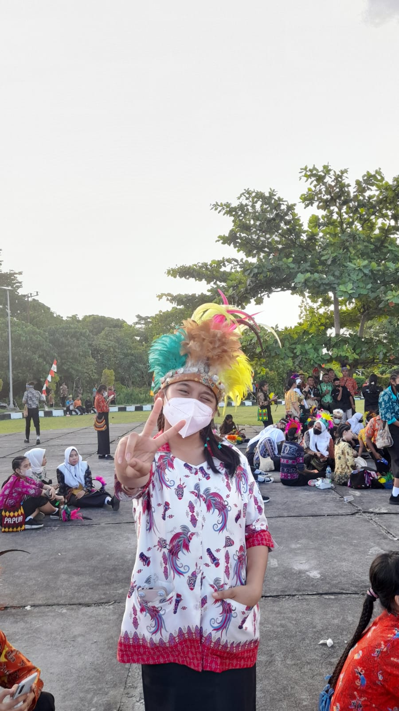

Harry Potter dan Batu Bertuah atau Harry Potter
and the Philosopher's Stone adalah sebuah film yang sangat sukses pada tahunbr
2001 yang diangkat dari novel fantasi J. K. Rowling dengan judul yang sama.
Ketika musuh yang tak terduga muncul, mengancam keselamatan dan
keamanan dunia, Nick Fury, direktur Badan Perdamaian Internasional, dikenal sebagai S.H.I.E.L.D. ,
membutuhkan tim untuk menyelamatkan dunia dari bencana. Usaha perekrutan pun dimulai Iron Man, Captainbr
America, Hulk, Thor, Black Widow dan Hawkeye dikumpulkan untuk menaklukkan Dewa Kehancuran, Loki, dalam
usahanya menghancurkan bumi. Dengan semua gabungan kekuatan, tugas nampak lebih mudah. Namun kenyatannya
tidak demikian! Para pahlawan super justru saling melawan satu sama lain Hulk melawan Captain America, siapa
yang akan menang? Apakah Iron Man dapat mengalahkan kekuatan super milik Thor? Bagaimana para pahlawan super ini
secara bersama-sama menghadapi bencana, melindungi masyarakat dan yang terpenting, bertahan hidup?
urassic World adalah film aksi fiksi ilmiah Amerika Serikat tahun 2015.
Ini adalah angsuran keempat dari waralaba Jurassic Park dan yang pertama dalam trilogi Jurassic World.
The Lion King adalah sebuah film animasi produksi Walt Disney Feature Animation
yang dirilis ke bioskop oleh Walt Disney Pictures pada 15 Juni 1994, dan dirilis untuk publik pada 24 Juni 1994.
Film ini merupakan film ke-32 dari rangkaian film animasi klasik Walt Disney
Seorang Marinir lumpuh dikirim ke bulan Pandora untuk menjalani misi khusus namun,
ia justru dilema antara mengikuti perintah atau melindungi dunia baru yang iya rasakan seperti rumah..
|  | Nama Lengkap | : | Noudia Inex pasiakan |
| Tempat Tanggal Lahir | : | Ao'Gading,28 juni 2004 | |
| Alamat | : | Jln. Pertanian Wosi dalam | |
| Media sosial | : | |
|
| Tentang Saya | : | klik disini untuk melihat |
| No | Kode MataKuliah | Nama Matakuliah | Hari | Jam | Dosen Pengampu |
|---|---|---|---|---|---|
| 1. | D65053 | Basis Data Lanjutan | Selasa | 12:20-14:20 | Ratna Julita,S.T.,M.T |
| 2. | D65307 | Jaringan Komputer | Senin | 10:00-12:00 | Andreas Sumendap, ST., M.T |
| 3. | D61045712W | Kewirausahaan | Kamis | 08:00-09:40 | Layanan |
| 4. | D65302 | Pemrograman Berbasis Web | Selasa | 12:00-14:00 | Christian Dwi Suhendra, S.T., M.T |
| 5. | D65304 | Probabilitas dan Statistika | Rabu | 11:00-13:00 | Marlinda Sanglise,S.Kom.,M.T |
| 6. | D65305 | Sistem Digital | Senin | 08:00-10:00 | Abdul Z. Patiran,S.T., M.MT |
| 7. | D65308 | Sistem Operasi | Rabu | 12:30-14:30 | Alex De Kweldju, S.Kom., M.S |
| 8. | D65301 | Struktur Data | Senin | 15:00-17:00 | Ratna Julita,S.T.,M.T |
SEMANGAT!!
JANGAN TAKUT GAGAL!!
YAKIN PASTI BISA!!
LOVE YOUR SELF
UBAH INSECURE JADI BERSYUKUR
MENCOBA MENERIMA KENYATAAN
RAJIN BERDOA
KOMUNIKASI DENGAN TUHAN
YANG PALING UTAMA